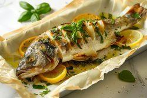
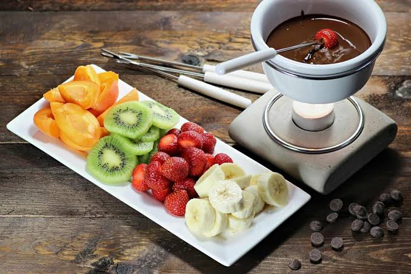
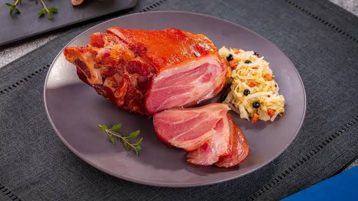
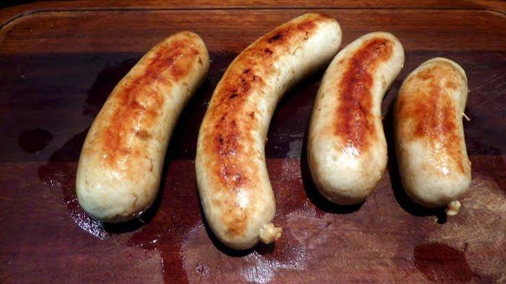
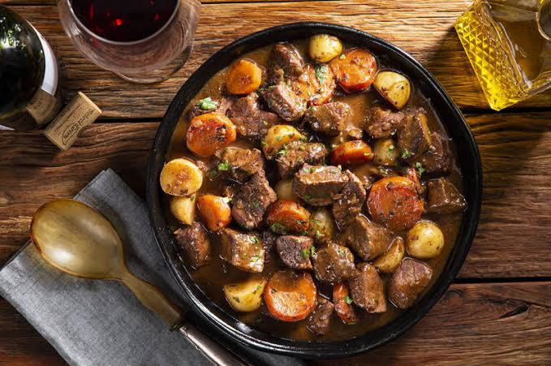
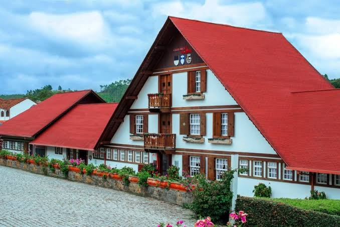
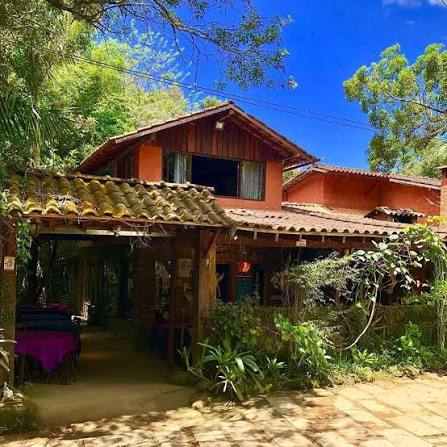
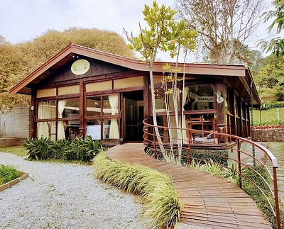
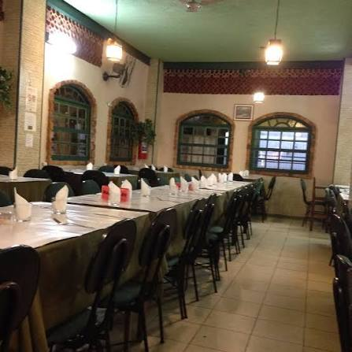
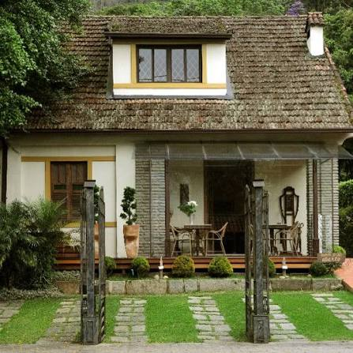

Pratos Típicos
- Trilha grelhada
O peixe de águas frias é o grande símbolo gastronômico da região, servido com amêndoas, alcaparras, ervas, manteiga ou molhos especiais.

- Fondue
Muito procurado durante o inverno, nas versões de queijo, carne e chocolate, aproveitando o clima serrano.

- Einsbein (joelho de porco)
Clássico da culinária alemã, geralmente servido com chucrute, batatas e mostarda.

- Salsichas artesanais e embutidos alemães
Produzidos seguindo tradições dos imigrantes europeus, harmonizam bem com cervejas artesanais da região.

- Goulash
Ensopado de carne com páprica, muito presente na culinária de influência germânica e centro-europeia.

Locais Recomendados
- Queijaria Escola de Nova Friburgo
Parada obrigatória para degustar e comprar queijos artesanais produzidos na região, no distrito de Campo do Coelho.

- Arco Iris Trutas
Localizado nos Três Picos, é ideal para experimentar trutas frescas em um ambiente rural.

- Astral Gastronomia
Localizado em Mury, possui avaliações excepcionais devido à sua culinária contemporânea sofisticada. O ambiente intimista e romântico é perfeito para os dias frios da serra.

- Churrascaria Quinta Rica
Ponto de referência definitivo para os amantes de carne no Centro. Oferece um tradicional e farto sistema de rodízio de carnes acompanhado por um variado buffet.

- Crescente Gastronomia
Um dos restaurantes mais sofisticados e artísticos localizados no Centro. Apresenta um menu requintado, com pratos criativos e ingredientes locais de alta qualidade.
